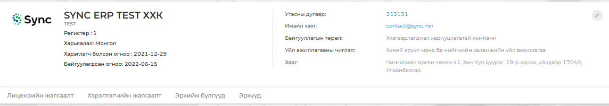
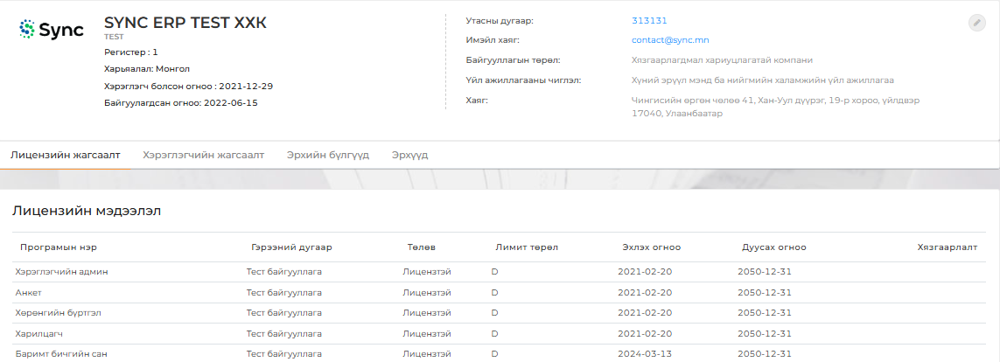

Модульд хандах үед Нүүр хуудас цэс нээгдэж байгууллагын ерөнхий мэдээлэл доорх зурагт үзүүлсэн байдлаар харагдах
бөгөөд баруун дээд буланд байрлах товчийг ашиглан байгууллагын ерөнхий мэдээллийг засварлах боломжтой.

